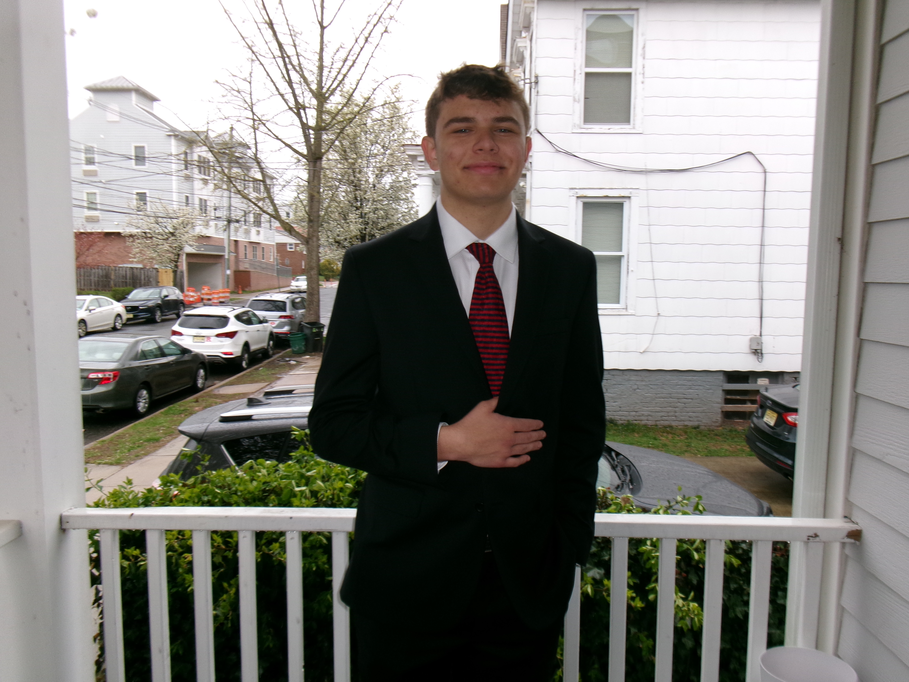

I am a Business student at Rutgers University interested in FP&A, supply chain, business operations, and analytics who has gained and harnessed hands-on experience through my education, work, and various high-level college prep courses in tracking KPIs, finding drivers behind results, and communicating what matters to a team.
I am pursuing a Bachelor of Science in Supply Chain Management at Rutgers Business School with an expected graduation date of May 2028. I currently hold a 3.58 GPA and have earned Dean's List recognition three times, in Spring 2025, Fall 2025, and Spring 2026.
My academic background includes coursework in Supply Chain Management, Financial Accounting, Financial Management, and Statistical Methods for Business, giving me exposure to both the operational and financial sides of business decision-making.
Outside of the classroom, I am a member of BASE, the Rutgers Business Association of Supply Chain Expertise, where I continue to expand my exposure to the supply chain field and the professional opportunities within it.
I have also completed the Walmart USA Area Manager job simulation through Forage, where I worked through scenarios involving warehouse operations, safety, staffing, equipment issues, and operational decision-making.
I am seeking opportunities in FP&A, supply chain management, business analytics, procurement, or partnerships where I can contribute with initiative, attention to detail, and clear communication.
My professional interests include FP&A, financial reporting, supply chain management, forecasting, business operations, partnerships and activation measurement, logistics and inventory, and procurement.
I implemented a quality control process through assembling and preparing storage hardware solutions, including OWC RAID drive enclosures, while ensuring products were properly prepared for customers.
I coordinated product labeling using custom RFID labels, inventory organization, and fulfillment workflows to maintain operational efficiency throughout the order process.
The project was supported by my broader responsibilities involving sales and purchase orders, shipping and receiving, inventory tracking, QuickBooks documentation, deliveries, pickups, and communication with customers and business partners.
I improved the store's closing process by organizing responsibilities, delegating tasks more efficiently, and helping team members complete their responsibilities in a timely manner.
Through these improvements, I reduced total closing time by approximately 50%.
This project built on my responsibilities as a supervisor, where I directed employees throughout shifts, managed more than 30 delegated duties, trained approximately 5–10 employees, monitored inventory, handled customer issues, and processed more than 100 transactions per shift.